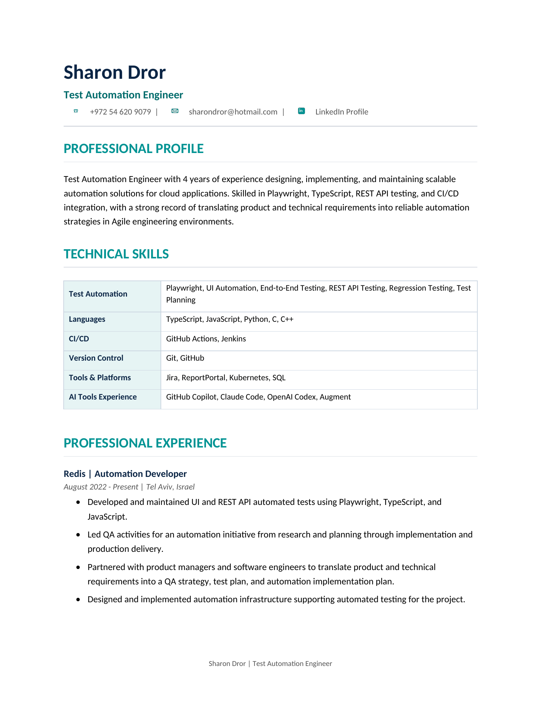

Automation Coverage
UI, REST API, end-to-end, regression, and test planning for cloud application workflows.
Automation • Quality • Cloud Testing
Test Automation Engineer
I build reliable UI and REST API automation for cloud applications, with a focus on Playwright, TypeScript, CI/CD integration, and practical test infrastructure that helps teams ship with confidence.
Background
Test Automation Engineer with 4 years of experience designing, implementing, and maintaining scalable automation solutions for cloud applications. Skilled in Playwright, TypeScript, REST API testing, and CI/CD integration, with hands-on experience translating product and technical requirements into reliable automation strategy, test plans, and implementation plans. Comfortable investigating failures with debugging and observability tools such as Kibana, ReportPortal, SQL, and Kubernetes environment checks.

What I Bring
UI, REST API, end-to-end, regression, and test planning for cloud application workflows.
Automated test suites integrated into GitHub Actions and Jenkins pipelines.
Simulators and supporting tools that improve coverage and make end-to-end testing more reliable.
Close work with product managers and software engineers, including code reviews and QA strategy.
Using Kibana, ReportPortal, SQL, and environment signals to investigate failures and speed up root-cause analysis.
Technical Stack
Work History
Automation Developer
Quality Assurance Tester
Junior PHP Developer
Academic & Training
C/C++ Software Development Internship
2017 - 2018Bachelor's Degree, Film/Cinema/Video Studies
2010 - 2014Get In Touch